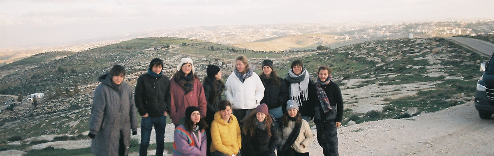

מי אנחנו - מדרשת דרור
מדרשה פוליטית חברתית

מהי מדרשת דרור?
מדרשת דרור קמה במטרה לפתח מנהיגות אזרחית צעירה שתפעל להעלאת מודעות וקידום פעילות בנושא הסכסוך הישראלי-פלסטיני, ולנסות לייצר מציאות שוויונית יותר בין הים לנהר.
החזון שלנו
יצירת אלטרנטיבה פוליטית לסכסוך הדמים המתמשך, המבוססת על ערכי סולידריות ושוויון אזרחי. פיתוח הנהגה בקרב צעירות וצעירים המוכנים להשמיע קול ביקורת, על אף המחיר החברתי, ופועלים להשפיע על מקבלי ההחלטות ועל הציבור הרחב בישראל.
אנו מאמינים כי לימוד מעמיק הוא המפתח לתיקון עולם. כפי שנאמר: "לא המדרש עיקר אלא המעשה" – הלימוד שלנו אינו מסתכם בידע תיאורטי, אלא מהווה כלי לשינוי תודעתי וחברתי. אנו שואפים לכונן חברה שבה ערכי החירות, השוויון וכבוד האדם הם התשתית לחיים המשותפים בארץ.
ארבעת עמודי האמונה של המדרשה
בעולם הדתי, לימוד תורה הוא דרך לעצב מצפון, להעמיק במוסר וללמוד אחריות כלפי אדם ומקום.
במדרשת דרור לומדים על הסכסוך כדי להבין את המציאות, מתוך הנחה שאי אפשר לתקן אם לא מכירים את השבר לעומקו.
הבורות היא החטא, והידיעה היא תחילת התשובה.
1. בקיאות שליטה בעובדות כחובה מוסרית
כמו תלמיד חכם שחייב לשלוט בפרטי ההלכה, כך עלינו לשלוט בפרטי המציאות. אי אפשר להגן על זכויות אדם על בסיס סיסמאות בלבד.
האימון: "גריסה" של עובדות. לומדים את המפות, את ההיסטוריה, את המעמד המשפטי, הסוציולוגיה והפסיכולוגיה, ואת ההסכמים והכישלונות, בלי הנחות.
המשמעות הרוחנית: זוהי מלחמה בבורות ובעצימת העיניים. אנחנו מתאמנים בלהביט למציאות בצורה נכוחה, גם כשהפרטים לא נעימים, משעממים או כואבים, כי האלטרנטיבה היא התעלמות רעילה.
2. "אלו ואלו" אחיזת המורכבות
האימון הקשה ביותר הוא היכולת להחזיק שני נרטיבים סותרים ("מחלוקת") מבלי שאחד יבטל את השני.
האימון: לומדים את הסיפור הציוני ואת הסיפור הפלסטיני זה לצד זה. קוראים טקסטים מכוננים של שני הצדדים. מתרגלים את היכולת להבין את הכאב, הפחד והצדק של ה"אחר", בלי לוותר על הזהות העצמית.
המשמעות הרוחנית: הרחבת הלב. אנחנו מתאמנים בלהפוך את הנפש שלנו לכלי קיבול רחב מספיק כדי להכיל את הטרגדיה הכפולה של הארץ הזו, מבלי לקרוס ומבלי להפוך לפנאטים.
3. עדות ירידה לשטח
לימוד הסכסוך לא יכול להישאר בבית המדרש (בכיתה). יש מצווה של "ראייה".
האימון: סיורים לימודיים בנקודות החיכוך, במחסומים, בשטחים הכבושים, בכפרים הלא-מוכרים וביישובי העוטף. המטרה היא לא "טיול", אלא עמידה מול הסבל והעוול.
המשמעות הרוחנית: להפוך את הידע לחוויה קיומית. כשאדם רואה עוול במו עיניו, הוא הופך ל"עד", ומעמד העד מחייב אותו לפעולה. זהו רגע של התעוררות מצפונית.
4. לימוד השפה מפתח ללב
שפה היא לא רק מילים, היא תרבות ונשמה. שפה היא מפתח ללב.
האימון: לימוד ערבית מדוברת (או הכרת מושגי יסוד תרבותיים).
המשמעות הרוחנית: הסרת המחיצות. כשאנחנו לומדים את שפתו של מי שנחשב "אויב" או "זר", אנחנו מכירים בצלם האלוהים שבו. זהו אקט של כבוד בסיסי, הושטת יד והסרת חומות של זרות. למידת השפה היא אקט פוליטי של יצירת שותפות אמיתית וחיבור עמוק למקום.
למה חשוב "לתרגל" הומניזם?
אנו מתאמנים כי המוסר הוא שריר, ואם לא נפעיל אותו, הוא יתנוון. אנו באים למדרשת דרור כדי להפוך את הטוב שבליבנו מכוונה רפויה לעוצמה מניעה.
1. הכנעת "יצר האדישות"
כמו שבדת יש את "יצר הרע", בהומניזם יש את "יצר האדישות". הטבע האנושי מושך אותנו לדאוג רק לקרובים אלינו ולעצום עין מול סבל רחוק. האימון הוא המאבק היומיומי לצאת מאזור הנוחות, להכריח את הראייה המוסרית, ולהפוך את האמפתיה מפרץ רגשי מזדמן להרגל טבוע בלב.
2. הפיכת ה"תורה" ל"הלכה"
קל מאוד להסכים עם ערכים של זכויות אדם כשהם כתובים על הנייר ("תורה"). קשה הרבה יותר ליישם אותם במצבי לחץ, בקונפליקט, או מול אדם שדעתו שונה משלך. האימון נועד לצמצם את הפער בין מה שאנחנו חושבים לבין איך שאנחנו פועלים.
האימון המעשי (סיורים, לימוד ערבית, מפגשים אינטימיים עם פלסטינים, בביתם) הוא הדרך שלנו לוודא שברגע האמת, התגובה שלנו תהיה מדודה ומחושבת, ולא אינסטינקטיבית ונקמנית.
3. בניית קהילה וכוח פוליטי
העולם רווי באכזריות, ציניות וכוחות נגדיים. פעיל זכויות אדם שיוצא לשטח ללא "מצברים מלאים" סופו להישבר, להתייאש או להתקהות. המדרשה היא "תחנת כוח" רוחנית. האימון המשותף, הלימוד והשיח מזכירים לנו למה אנחנו עושים את מה שאנחנו עושים, ומעניקים לנו "אורך נשימה" להמשיך במסע הארוך.
4. מקצועיות כערך
הצלת נפשות (או הגנה עליהן) דורשת מיומנות, לא רק כוונות טובות. כי רשלנות במאבק על זכויות אדם עולה בחיי אדם. אם אנחנו רוצים לשכנע, להשפיע ולשנות מציאות, עלינו להיות "תלמידי חכמים" של המקצוע שלנו – לשלוט בחומר ובכלי העבודה, להבין את נפש האדם שמולנו ולדעת כיצד לפרק התנגדויות בחוכמה וברוך.
בואו להיות חלק מהשינוי
הצטרפו אלינו לסמינר הבא או תמכו בפעילות המדרשה כדי שנוכל להמשיך ולהרחיב את מעגלי ההשפעה.